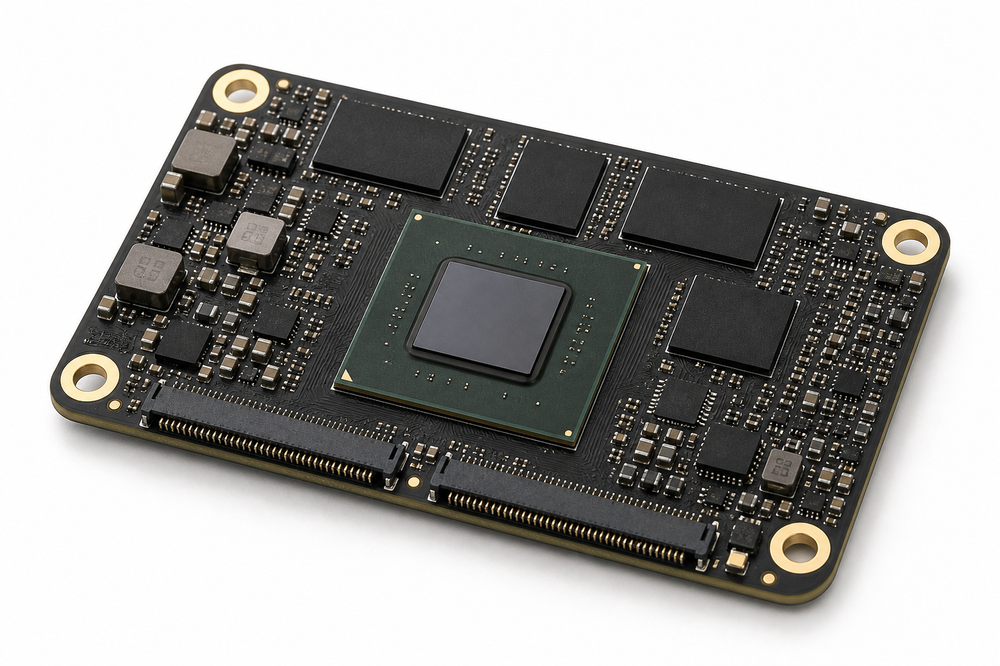

AI 기반 임베디드 인식 기술
카메라나 센서 데이터가 있지만 PC 데모를 넘어 제품 내부에서 판단해야 할 때, 데이터 취득부터 전처리, 추론 구조, 결과 로그까지 PoC로 묶습니다.
AI Edge Vision 상세 보기Problems We Solve
기술 단품을 나열하지 않고 고객 상황을 먼저 정리합니다. 필요한 경우 ZM4, carrier, Zynq, host tool을 묶어 동작하는 검증 환경으로 만듭니다.
카메라나 센서 데이터가 있지만 PC 데모를 넘어 제품 내부에서 판단해야 할 때, 데이터 취득부터 전처리, 추론 구조, 결과 로그까지 PoC로 묶습니다.
AI Edge Vision 상세 보기Vivado, Vitis, Zynq PS/PL, AXI-Lite, custom IP를 팀이 바로 따라 할 수 있는 실습형 교육으로 제공합니다.
아이디어를 architecture, RTL/FW, host tool, log package가 있는 검증 가능한 시제품 흐름으로 전환합니다.
전원, clock/reset, JTAG, boot, DDR, UART, register access에서 막힌 지점을 계측과 체크리스트로 분해합니다.
라이다, 초음파, 고속 거리측정기처럼 trigger timing과 timestamp capture가 필요한 구조를 검증합니다.
line sensor, 조명 timing, raw capture, 보정 전후 비교, 인식 알고리즘 연결을 PoC 범위로 정리합니다.
ZM4 FPGA SoM
ZM4는 센서 입력과 FPGA/Zynq 처리를 빠르게 검증하기 위한 FPGA SoM 모듈입니다. 검증된 보드와 carrier 흐름을 MADUINOS 지원 아래 손쉽게 사용하고, PoC 결과를 바로 양산 적용 범위로 이어갈 수 있게 합니다.

Where It Fits
카메라, CIS, TDC, 초음파처럼 timing과 raw data가 중요한 입력을 실시간 처리 구조, 로그, 검증 화면으로 연결합니다.

camera capture, preprocessing, edge inference, result overlay
TDC, trigger timestamp, timing histogram, 라이다/초음파 거리측정
line scan, lighting timing, raw capture, calibration, recognition pipeline
Zynq PS/PL, AXI register, custom IP, custom carrier PoC
Deep Dive
메인 페이지는 ZM4와 고객 문제를 중심으로 정리하고, 교육/컨설팅, PoC, 모듈 적용 구조는 상세 페이지로 분리했습니다.
Contact
사용 보드, 센서, 목표 성능, 현재 로그, 원하는 결과를 알려주시면 discovery 범위와 다음 실험을 빠르게 제안할 수 있습니다.